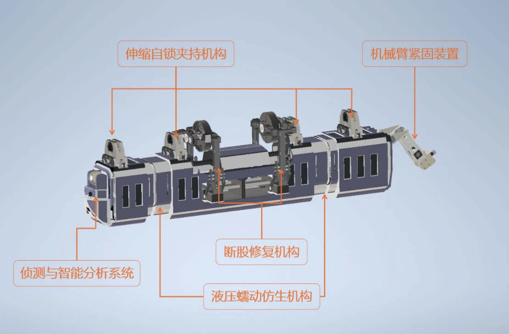

组织方案与设计分工
围绕高压线路越障与检修需求，组织团队开展总体方案设计，协调各功能模块的设计分工。
SELECTED WORK · 2025
从仿生运动出发，将越障、夹持、修复与紧固集成于一体，探索高压线路检修的机械解决方案。
2025 年中国大学生机械工程创新创意大赛一等奖

MY CONTRIBUTION
围绕高压线路越障与检修需求，组织团队开展总体方案设计，协调各功能模块的设计分工。
负责 Inventor 三维建模与运动仿真，开展 Fusion 有限元分析，结合机构运动与受力情况迭代方案。
协同撰写设计说明书、制作演示视频，将机构原理、设计过程与验证结果整理为完整作品。
SEE IT IN MOTION
2 分 38 秒，从总装模型到作业过程。
项目原始解说 · 三维动画与仿真展示
点击下方章节，可跳转查看
单独打开视频 ↗MECHANICAL DESIGN
从稳定行进，到在线维护。
点击图片，可放大查看设计细节。
ANALYSIS & ITERATION
围绕机构运动、关键部件承载和结构变形，开展数字化验证，并据此调整材料与结构。
THE FULL STORY
ABOUT THE DESIGNER
关注机械结构设计、三维建模与仿真分析。
欢迎通过招聘平台进一步交流项目细节与设计思路。